Chapter 5 Foundations for inference
Data and data sets are not objective; they are creations of human design. We give numbers their voice, draw inferences from them, and define their meaning through our interpretations. —Katie Crawford
Chapter by Matthew Crump
So far we have been talking about describing data and looking possible relationships between things we measure. We began by talking about the problem of having too many numbers. So, we discussed how we could summarize big piles of numbers with descriptive statistics, and by looking at the data with graphs. We also looked at the idea of relationships between things. If one thing causes another thing, then if we measure how one thing goes up and down, we should find that other thing goes up and down, or does something at least systematically following the first thing. Finally, at the end of the last chapter on correlation, we showed how correlations, which imply a relationship between two things, are very difficult to interpret. Why? because an observed correlation can be caused by a hidden third variable, or simply be a spurious findings “caused” by random chance.
Fortunately, we have many more tools at our disposal that improve our ability to make inferences about causation. So, now we begin our journey into inferential statistics. The tools we use to make inferences about where our data came from.
In this chapter we provide some foundational ideas. We will stay mostly at a conceptual level, and use lots of simulations like we did in the last chapter. In the remaining chapters we formalize the intuitions built here to explain how some common inferential statitistics work.
5.1 Brief review of Experiments
In chapter one we talked a little bit about research methods and experiments. Experiments are a structured way of collecting data that can permit inferences about causality. If we wanted to know whether something like watching cats on youtube increases happiness we would need an experiment. We already found out that just finding a bunch of people and measuring number of hours watching cats, and level of happiness, and correlating the two will not permit inferences about causation. For one, the causal flow could be reversed. Maybe being happy causes people to watch more cat videos. We need an experiment.
An experiment has two parts. A manipulation and a measurement. The manipulation is under the control of the experimenter. Manipulations are also called independent variables. For example, we could manipulate how many cat videos people will watch, 1 hour versus 2 hours of cat videos. The measurement is the data that is collected. We could measure how happy people are after watching cat videos on a scale from 1 to 100. Measurements are also called dependent variables. So, in a basic experiment like the one above, we take measurements of happiness from people in one of two experimental conditions defined by the independent variable. Let’s say we ran 50 subjects. 25 subjects would be randomly assigned to watch 1 hour of cat videos, and the other 25 subjects would be randomly assigned to watch 2 hours of cat videos. We would measure happiness for each subject at the end of the videos. Then we could look at the data. What would we want to look at? Well, if watching cat videos cause change in happiness, then we would expect the measures of happiness for people watching 1 hour of cat videos to be different from the measures of happiness for people watching 2 hours of cat videos. If watching cat videos does not change happiness, then we would expect no differences in measures of happiness between conditions. Causal forces cause change, and the experiment is set up to detect the change.
Now we can state one overarching question, how do we know if the data changed between conditions? If we can be confident that there was a change between conditions, we can infer that our manipulation caused a changed in the measurement. If we cannot be confident there was a change, then we cannot infer that our manipulation caused a change in the measurement. We need to build some change detection tools so we can know a change when we find one.
“Hold on, if we are just looking for a change, wouldn’t that be easy to see by looking at the numbers and seeing if they are different, what’s so hard about that?”. Good question. Now we must take a detour. The short answer is that there will always be change in the data (remember variance).
5.2 The data came from a distribution
From now on when you see a bunch of numbers, you should wonder, “where did this numbers come from?”. To elaborate, this question means wondering about the things behind the numbers, causing some kinds of numbers to happen more than other kinds of numbers. To think about this question, we will veer off into the abstract world of distributions. A distribution a place where numbers can come from. The distribution sets the constraints. It determines what numbers are likely to occur, and what numbers are not likely to occur. Distributions are abstract ideas. But, they can be made concrete, and we can draw them with pictures. Let’s look at some.
5.2.1 Uniform distribution
A uniform distribution is completely flat, it looks like this:
## Warning: package 'ggplot2' was built under R version 3.4.4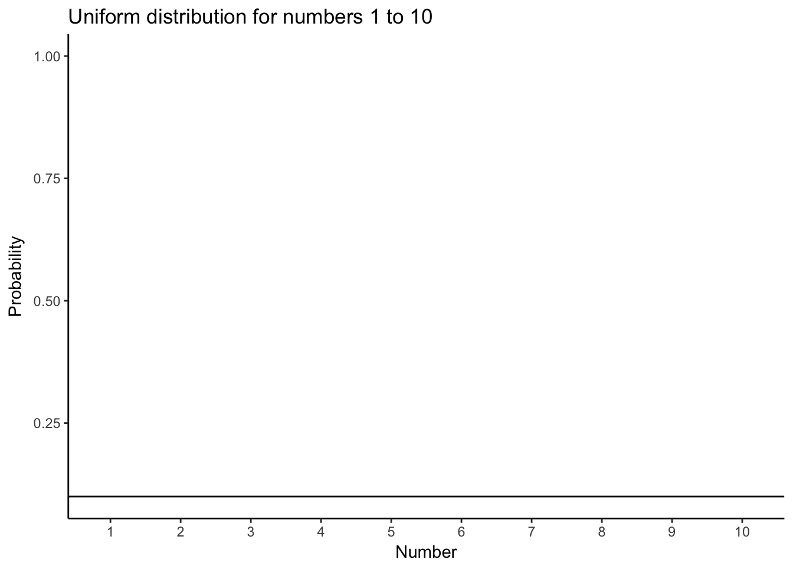
Ok, so that doesn’t look like much. What is going on here? The y-axis is labelled probability, and it goes from 0 to 1. The x-xaxis is labelled Number, and it goes from one to 10. There is a horizontal line drawn straight through. This line tells you the probability of each number from 1 to 10. Notice the line is flat. This means all of the numbers have the same probability of occuring. More specifically, there are 10 numbers from 1 to 10 (1,2,3,4,5,6,7,8,9,10), and they all have an equal chance of occuring. 1/10 = .1, which is the probability indicated by the horizontal line.
“So what?”. Imagine that this uniform distribution is a number generating machine. It spits out numbers, but it spits out each number with the probability indicated by the line. If this distribution was going to start spitting out numbers, it would spit out 10% 1s, 10% 2s, 10% 3s, and so on, up to 10% 10s. Wanna see what that would look like? Let’s make it spit out 100 numbers
| 8 | 9 | 9 | 2 | 10 | 7 | 6 | 8 | 6 | 7 |
| 3 | 2 | 2 | 8 | 6 | 5 | 7 | 9 | 8 | 10 |
| 9 | 9 | 2 | 9 | 1 | 2 | 1 | 10 | 7 | 2 |
| 7 | 6 | 9 | 10 | 6 | 9 | 3 | 5 | 9 | 6 |
| 1 | 4 | 10 | 9 | 5 | 4 | 3 | 10 | 9 | 7 |
| 9 | 5 | 10 | 7 | 2 | 2 | 6 | 4 | 5 | 6 |
| 9 | 4 | 6 | 2 | 3 | 3 | 3 | 8 | 5 | 2 |
| 9 | 8 | 8 | 2 | 7 | 9 | 6 | 7 | 1 | 4 |
| 7 | 4 | 6 | 7 | 7 | 8 | 6 | 6 | 5 | 5 |
| 1 | 3 | 9 | 3 | 10 | 10 | 4 | 6 | 2 | 6 |
We used the uniform distribution to generate these numbers. Officially, we call this sampling from a distribution. Sampling is what you do at a grocery store when there is free food. You can keep taking more. However, if you take all of the samples, then what you have is called the population. We’ll talk more about samples and populations as we go along.
Because we used the uniformat distribution to create numbers, we already know where our numbers came from. However, we can still pretend for the moment that someone showed up at your door, showed you these numbers, and then you wondered where they came from. Can you tell just by looking at these numbers that they came from a uniform distribution? What would need to look at? Perhaps you would want to know if all of the numbers occur with roughly equal frequency, after all they should have right? That is, if each number had the same chance of occuring, we should see that each number occurs roughly the same number of times.
We already know what a histogram is, so we can put our numbers into a histogram and see what the counts look like. If all of the numbers occur with equal frequency, then each number should occur 10 times, because we sampled a total of 100 numbers. The histogram looks like this:

Uh oh, as you can see, not all of the number occured 10 times each. All of the bars are not the same height. This shows that randomly sampling numbers from this distribution does not guarantee that our numbers will be exactly like the distribution thehy came from. We can call this sampling error, or sampling variability.
5.2.2 Not all samples are the same, they are usually quite different
Let’s take a look at sampling error more closely. We will sample 20 numbers from the uniform. Here we should expect that each number between 1 and 10 occurs two times each. Let’s take 20 sample and make a histogram. And then, let’s do that 10 times. So we will be looking at 10 histograms, each showing us what the 10 different samples of twenty numbers looks like:
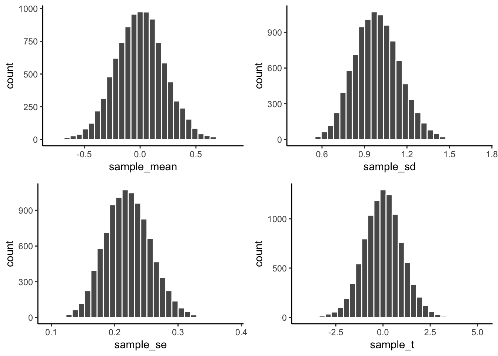
You might notice right away that none of the histograms are the same. Even though we are randomly taking 20 numbers from the very same uniform distribution, each sample of 20 numbers comes out different. This is sampling variability, or sampling error.
Here is movie version. You are watching a new histogram for each sample of 20 observations. The horizontal line shows the shape of the uniform distribution. It crosses the y-axis at 2, because we expect that each number (from 1 to 10) should occur about 2 times each in a sample of 20. However, as you can see, this does not happen. Instead, each sample bounces around quite a bit, due to random chance.
## Warning in min(best[best != 0]): no non-missing arguments to min; returning
## Inf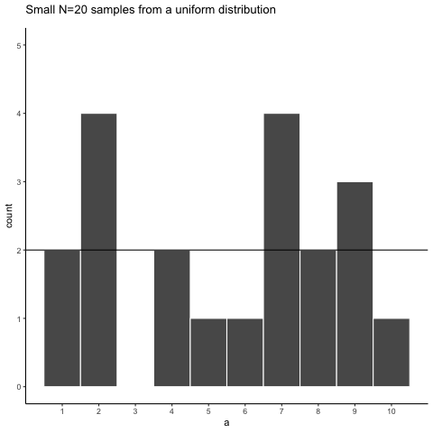
Looking at the above histograms shows us that figuring out where our numbers came from can be difficult. In the real world, our measurements are samples. We usually only have the luxury of getting one sample of measurements, rather than repeating our own measurements 10 times or more. If you look at the histograms, you will see that some of them look like they could have come from the uniform distribution: most of the bars are near two, and they all fall kind of on a flat line. But, if you happen to look at a different sample, you might see something that is very bumpy, with some numbers happening way more than others. This could suggest to you that those numbers did not come from a uniform distribution (they’re just too bumpy). But let me remind you, all of these samples came from a uniform distribution, this is what samples from that distribution look like. This is what chance does to samples, it makes the individual data points noisy.
5.2.3 Large samples are more like the distribution they came from
Let’s refresh the question. Which of these two samples do you think came from a uniform distribution?
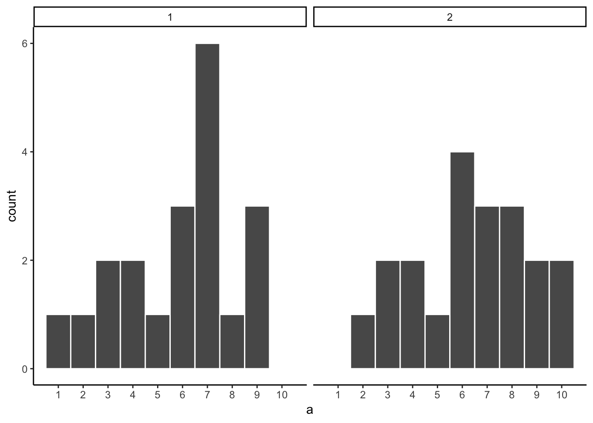
The answer is that they both did. But, neither of them look like they did.
Can we improve things, and make it easier to see if a sample came from a uniform distribution? Yes, we can. All we need to do is increase the sample-size. We will often use the letter n to refer to sample-size. N is the number of observations in the sample.
So let’s increase the number of observations in each sample from 20 to 100. We will again create 10 samples (each with 100 observations), and make histrograms for each of them. All of these samples will be drawn from the very same uniform distribution. This, means we should expect each number from 1 to 10 to occur about 10 times in each sample. Here are the histograms:
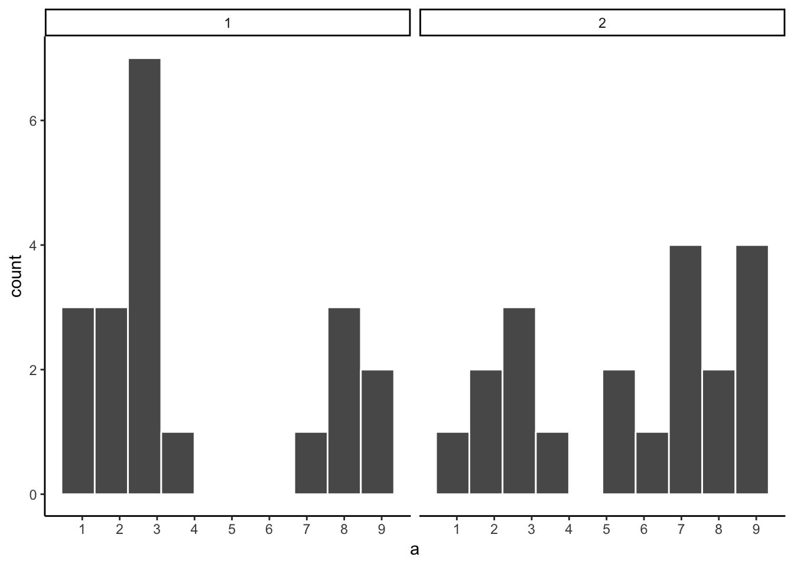
Again, most of these histograms don’t look very flat, and all of the bars seem to be going up or down, and they are not exactly at 10 each. So, we are still dealine with sampling error. It’s a pain. It’s always there.
Let’s bump it up to 1000 observations per sample. Now we should expect every number to appear about 100 times each. What happens?
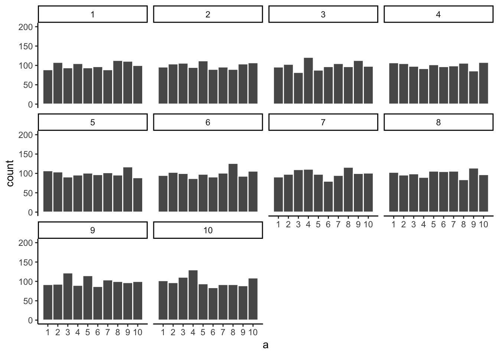
Each of these histograms are starting to flatten out. The bars are still not perfectly at 100, because there is still sampling error (there always will be). But, if you found a histrogram that looked flat and knew that the sample contained many observations, you might be more confident that those numbers came from a uniform distribution.
Just for fun let’s make the samples really big. Say 100,000 observations per sample. Here, we should expect that each number occurs about 10,000 times each. What happens?
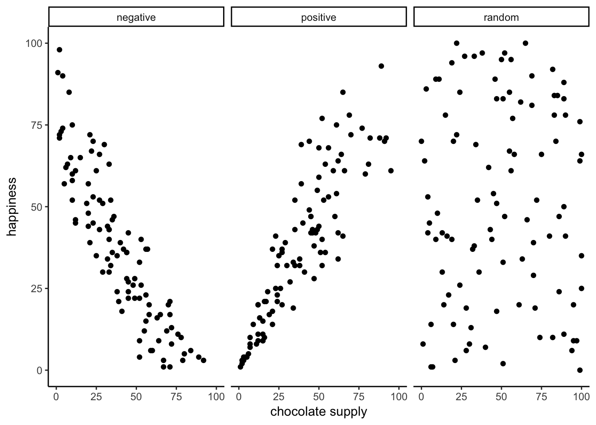
Now we see that all of our samples start to look the same. They all have 100,000 observations, and this gives chance enough opportunity to equally distribute the numbers, roughly making sure that they all occur very close to the same amount of times. As you can see, the bars are all very close to 10,000, where they should be if the sample came from a uniform distribution.
Pro tip: The pattern behind a sample will tend to stabilize as sample-size increases. Small samples will have all sorts of patterns because of sampling error (chance).
Before getting back to experiments, let’s ask two more questions. First, which of these two samples do you think came from a uniform distribution? I will tell you that each of these samples had 20 observations each.

If you are not confident in the answer, this is because sampling error (randomness) is fuzzing with the histograms.
Here is the very same question, only this time we will take 1,000 observations for each sample. Which one do you think came from a uniform distribution, which one did not?
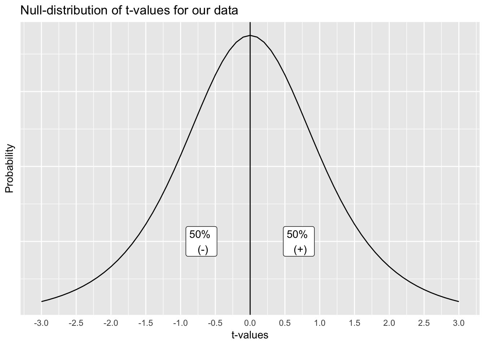
Now that we have increased N, we can see the pattern in each sample becomes more obvious. The histogram for sample 1 has bars near 100, not perfectly flat, but it resembles a uniform distribution. The histogram for sample 2 does not look flat at all. Instead, there the number five appears most of the time, and numbers on either side of five happen less and less.
Congratulations to Us! We have just made some statistical inferences without using formulas!
“We did?”. Yes, by looking at our two samples we have inferred that sample 2 did not come from a uniform distribution. We have also inferred that sample 1 could have come froma uniform distribution. Fantastic. This is really all we will be doing for the rest of the course. We will be looking at some numbers, wondering where they came from, then we will arrange the numbers in such a way so that we can make an inference about where they came from. That’s it.
5.3 Playing with distributions
talk about a few different distribution. Embed shiny app
SHINY APP here
5.4 Is there a difference?
Let’s get back to experiments. In an experiment we want to know if our independent variable (our manipulation) causes a change in our dependent variable (measurement). If this occurs, then we will expect to see some differences in our measurement as a function of manipulation.
Consider the light switch example:
Light Switch Experiment: You manipulate the switch up (condition 1 of independent variable), light goes on (measurement). You manipulate the switch down (condition 2 of independent variable), light goes off (another measurement). The measurement (light) changes (goes off and on) as a function of the manipulation (moving switch up or down).
You can see the change in measurement between the conditions, it is as obvious as night and day. So, when you conduct a manipulation, and can see the difference (change) in your measure, you can be pretty confident that your manipulation is causing the change.
note: to be cautious we can say “something” about your manipulation is causing the change, it might not be what you think it is if your manipulation is very complicated and involves lots of moving parts.
5.4.1 Chance can produce differences
Do you think random chance can produce the appearance of differences, even when they really aren’t any? I hope so. We have already shown that the process of sampling numbers from a distribution is chancy process that produces different samples. Different samples are different, so yes, chance can produce differences. This can muck up our interpretation of experiments.
Let’s conduct a fictitious experiment where we expect to find no differences, because we will manipulate something that shouldn’t do anything. Her’s the set-up:
You are the experimenter standing in front of a gumball machine. It is very big, has thousands of gumballs. 50% of the gumballs are green, and 50% are red. You want to find out if picking gumballs with your right hand vs. your left hand will cause you to pick more green gumballs. Plus, you will be blindfolded the entire time. The independent variable is Hand: right hand vs. left hand. The dependent variable is the measurement of the color of each gumball.
You run the experiment as follows. 1) put on blind fold. 2) pick 10 gumballs randomly with left hand, set them aside. 3) pick 10 gumballs randomly with right hand, set them aside. 4) count the number of green and red gumballs chosen by your left hand, and count the number of green and red gumballs chosedn by your right hand. Hopefully you will agree that your hands will not be able to tell the difference between the gumballs. If you don’t agree, we will further stipulate the gumballs are completely identical in every way except their color, so it would be impossible to tell them apart using your hands. So, what should happen in this experiment?
“Umm, maybe you get 5 red gum balls and 5 green balls from your left hand, and also from your right hand?”. Sort of yes, this is what you would usually get. But, it is not all that you can get. Here is some data showing what happened from one pretend experiment:
| hand | gumball |
|---|---|
| left | 1 |
| left | 1 |
| left | 1 |
| left | 1 |
| left | 1 |
| left | 0 |
| left | 0 |
| left | 0 |
| left | 1 |
| left | 0 |
| right | 0 |
| right | 1 |
| right | 1 |
| right | 1 |
| right | 0 |
| right | 0 |
| right | 0 |
| right | 1 |
| right | 1 |
| right | 0 |
“What am I looking at here”. This is a long-format table. Each row is one gumball. The first column tells you what hand was used. The second column tells you what kind of gumball. We will say 1s stand for green gum balls, and 0s stand for red gumballs. So, did your left hand cause you to pick more green gumballs than your right hand?
It would be easier to look at the data using a bar graph. To keep things simple, we will only count green gumablls (the other gumballs must be red). So, all we need to do is sum up the 1s. The 0s won’t add anything.
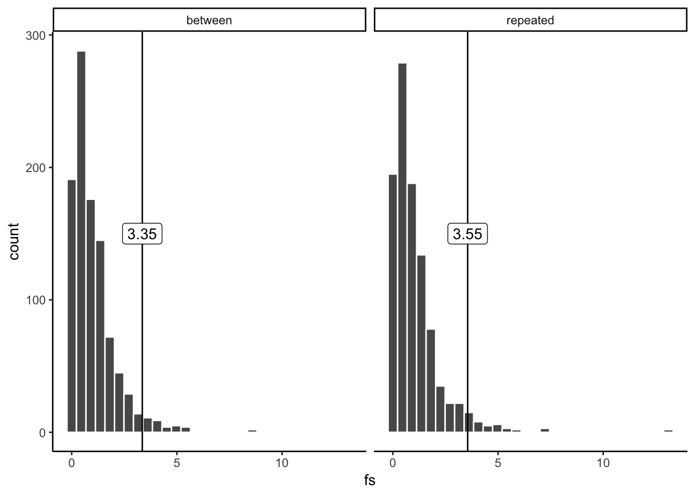
Oh look, the bars are not the same. One hand picked more green gum balls than the other. Does this mean that one of your hands secretly knows how to find green gumballs? No, it’s just another case of sampling error, that thing we call luck or chance. The difference here is caused by chance, not by the manipulation (which hand you use). Major problem for inference alert. We run experiments to look for differences so we can make inferences about whether our manipulations cause change in our measures. Now we know that we can find differences by chance. How can we know if a difference is real, or just caused by chance?
5.4.2 Differences due to chance can be simulated
Remember when we showed that chance can produce correlations. We also showed that chance is restricted in its ability to produce correlations. For example, chance more often produces weak correlations than strong correlations. Remember the window of chance? We found out before that correlations falling outside the window of chance were very unlikely. We can do the same thing for differences. Let’s find out just what chance can do in our experiment. Once we know what chance is capable of we will be in a better position to judge whether our manipulation caused a difference, or whether it could have been chance.
The first thing to do is pretend you conduct the gumball experiment 10 times in a row. This will produce 10 different sets of results. For each of them we can make a bar graph, and look at whether the left hand chose more green gumballs than red gumballs. It looks like this:

These 10 experiments give us a better look at what chance can do. It should also mesh well with your expectations. If everything is left up to chance (as we have made it so), then sometimes your left hand will choose more green balls, sometimes your right hand will choose more green gumballs, and sometimes they will choose the same amount of gumballs. Right? Right.
5.5 Chance makes some differences more likely than others
Ok, we have seen that chance can produce differences here. But, we still don’t have a good idea about what chance usually does and doesn’t do. For example, if we could find the window of opportunity here, we would be able find out that chance usually does not produce differences of a certain large size. If we knew what the size was, then if we ran experiment and our difference was bigger than what chance can do, we could be confident that chance did not produce our difference.
Let’s use the word difference some more, because it will be helpful. In fact, let’s think about our measure of green balls in terms of a difference. For example, in each experiment we counted the green balls for the left and right hand. What we really want to know is if there is a difference between them. So, we can calculate the difference score. Let’s decide that difference score = # of green gumballs in left hand - # of green gumballs in right hand. Now, we can redraw the 10 bar graphs from above. But this time we will only see one bar for each experiment. This bar will show the differenced in number of green gumballs.
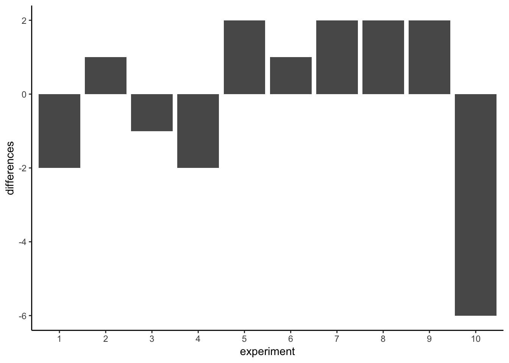
Missing bars mean that there were an equal number of green gumballs chosen by the left and righ hands (difference score is 0). A positive value means that more green gumballs were chosen by the left than right hand. A negative value means that more green gumballs were chosen by the right than left hand. Note that if we decided (and we get to decide) to calculate the difference in reverse (right hand - left hand), ths signs of the differences scores would flip around.
We are starting to see more of the differences that chance can produce. The difference scores are mostly between -2 to +2. We could get an even better impression by running this pretend experiment 100 times instead of only 10 times. How about we do that.
hand<-rep(rep(c("left","right"),each=10),100)
experiment<-rep(1:100,each=20)
gumball<-rbinom(20*100,1,.5)
df<-data.frame(experiment,hand,gumball)
sum_df<-aggregate(gumball~experiment*hand,df,sum)
differences<-sum_df[sum_df$hand =="left",]$gumball-
sum_df[sum_df$hand =="right",]$gumball
dif_df<-data.frame(experiment=c(1:100),differences)
dif_df$experiment<-as.factor(dif_df$experiment)
ggplot(dif_df,aes(y=differences,x=experiment))+
geom_bar(stat="identity")+
theme_classic()+
ylab("differences")
OOf, we just ran so many simulated expeirments that the x-axis is unreadable, but it goes from 1 to 100. Each bar represents the difference of number of green balls chosen randomly by the left or right hand. Beginning to notice anything? Look at the y-axis, this shows the size of the difference. Yes, there are lots of bars of different sizes, this shows us that many kinds of differences do occur by chance. However, the y-axis is also restricted. It does not go from -10 to +10. Big differences greater than 5 or -5 don’t happen very often.
Now that we have a method for simulating differences due to chance, let’s run 10,000 simulated experiments. But, instead of plotting the differences in a bar graph for each experiment, how about we look at the histogram of difference scores. This will give us a clearer picture about which differences happen most often, and which ones do not. This will be another window into chance. The chance window of differences.
hand<-rep(rep(c("left","right"),each=10),10000)
experiment<-rep(1:10000,each=20)
gumball<-rbinom(20*10000,1,.5)
df<-data.frame(experiment,hand,gumball)
sum_df<-aggregate(gumball~experiment*hand,df,sum)
differences<-sum_df[sum_df$hand =="left",]$gumball-
sum_df[sum_df$hand =="right",]$gumball
hist(differences,breaks=seq(-10,10,1))
Our computer simulation allows us to force chance to operate hundreds of times, each time it produces a difference. We record the difference, then at the end of the simulation we plot the histogram of the differences. The histogram begins to show us the where the differences came from. Remember the idea that numbers come from a distribution, and the distribution says how often each number occurs. We are looking at one of these distributions. It is showing us that chance produces some differences more often than others. First, chance usually produces 0 differences, that’s the biggest bar in the middle. Chance also produces larger differences, but as the differences get larger (positive or negative), they occur less frequently. The shape of this histogram is your chance window, it tells you what chance can do, it tells you what chance usually does, and what it usually does not do.
You can use this chance window to help you make inferences. If you ran yourself in the gumball experiment and found that your left hand chose 2 more green gumballs than red gumballs, would you conclude that you left hand was special, and caused you to choose more green gumballs? Hopefully not. You could look at the chance window and see that differences of size +2 do happen fairly often by chance alone. You should not be surprised if you got a luck +2 difference. However, what if your left chose 5 more green gumballs than red gumballs. Well, chance doesn’t do this very often, you might think something is up with your left hand. If you got a whopping 9 more green gumballs than red gumballs, you might really start to wonder. This is the kind of thing that could happen (it’s possible), but virtually never happens. When you get things that almost never happen by chance, you can be more confident that the difference reflects a causal force that is not chance.
5.6 The Crump Test
We are going to be doing alot of inference throughout the rest of this course. Pretty much all of it will come down to one question. Did chance produce the differences in my data? We will talking about experiments mostly, and in experiments we want to know if our manipulation caused a difference in our measurement. But, we measure things that have natural variability, so everywhere time we measure things we will always find a difference. We want to know if the difference we found (between our experimental conditions) could have been produced by chance. If chance is a very unlikely explanation of our observed difference, we will make the inference that chance did not produce the difference, and that something about our experimental manipulation did produce the difference. This is it (for this textbook).
Statistics is not only about determining whether chance could have produced a pattern in the observed data. The same tools we are talking about here can be generalized to ask whether any kind of distribution could have produced the differences. This allows comparisons between different models of the data, to see which one was the most likely, rather than just rejecting the unlikely ones (e.g., chance). But, we’ll leave those advanced topics for another textbook.
This chapter is about building intuitions for making these kinds of inferences about the role of chance in your data. It’s not clear to me what are the best things to say, to build up your intuitions for how to do statistical inference. So, this chapter tries different things, some of them standard, and some of them made up. What you are about to read, is a made up way of doing statistical inference, without using the jargon that we normally use to talk about it. The goal is to do things without formulas, and without probabilities, and just work with some ideas using simulations to see what happens. We will look at what chance can do, then we will talk about what needs to happen in your data in order for you to be confident that chance didn’t do it.
5.6.1 Intuitive methods
Warning, this is an unoffical statistical test made up by Matt Crump. It makes sense to him (me), and if it turns out someone else already made this up, then Crump didn’t do his homework, and we will change the name of this test to it’s original author. The point of this test is to show how simple operations that you already understand can be used to create a tool for inference. This test is not complicated, it uses
- Sampling numbers randomly from a distribution
- Adding, substracting
- Division, to find the mean
- Counting
- Graphing and drawing lines
- NO FORMULAS
5.6.2 Part 1: Frequency based intuition about occurence
Question: How many times does something need to happen, for it to happen alot? Or, how many times does something need to happen for it to happen not very much, or even really not at all? Small enough for you to not worry about it at all happening to you?
Would you go outside everyday if you thought that you would get hit by lightning 1 out of 10 times? I wouldn’t. You’d probably be hit by lightning more than once per month, you’d be dead pretty quickly. 1 out of 10 is alot (to me, maybe not to you, there’s no right answer here).
Would you go outside everyday if you thought that you would get hit by lightning 1 out of every 100 days? Jeez, that’s a tough one. What would I even do? If I went out everyday, I’d probably be dead in a year! Maybe I would go out 2 or 3 times per year, I’m risky like that, but I’d probably live longer. It would massively suck.
Would you go outside everyday if you thought you would get hit by lightning 1 out of every 1000 days? Well, you’d probably be dead in 3-6 years if you did that. Are you a gambler? Maybe go out once per month, still sucks.
Would you go outside everyday if you thought lightning would get you 1 out every 10,000 days? 10,000 is a bigger number, harder to think about. It’s about once every 27 years. Ya, I’d probably go out 150 days per year, and live a bit longer if I can.
Would you go outside everyday if you thought lightning would get you 1 out every 100,000 days? 100,000 is a bigger number, harder to think about. How many years is that? It’s about 273 years. With those odds, I’d probably go out all the time and forget about being hit by lightning. It doesn’t happen very often, and if it does, c’est la vie.
The point of considering these questions is to get a sense for yourself of what happens alot, and what doesn’t happen alot, and how you would make important decisions based on what happens alot and what doesn’t.
5.6.3 Part 2: Simulating chance
This next part could happen a bunch of ways, I’ll make loads of assumptions that I won’t defend, and I won’t claim the Crump test has problems. I will claim it helps us make an inference about whether chance could have produced some differences in data. We’ve already been introduced to simulating things, so we’ll do that again. Here is what we will do. I am cognitive psychologist who happens to be measuring X. Because of prior research in the field, I know that when I measure X, my samples will tend to have a particular mean and standard deviation. Let’s say the mean is usually 100, and the standard deviation is usually 15. In this case, I don’t care about using these numbers as estimates of the population parameters, I’m just thinking about what my samples usually look like. What I want to know is how they behave when I sample them. I want to see what kind of samples happen alot, and what kind of sample don’t happen alot. Now, I also live in the real world, and in the real world when I run experiments to see what changes X, I usually only have access to some number of participants, who I am very grateful too, because they participate in my experiments. Let’s say I usually can run 20 subjects in each condition in my experiments. Let’s keep the experiment simple, with two conditions, so I will need 40 total subjects.
I would like to learn something to help me with inference. One thing I would like to learn is what the sampling distribution of the sample mean looks like. This distribution tells me what kinds of mean values happen alot, and what kinds dont’t happen very often. But, I’m actually going to skip that bit. Because what I’m really interested in is what the sampling distribution of the difference between my sample means looks like. After all, I am going to run an experiment with 20 people in one condition, and 20 people in the other. Then I am going to calculate the mean for group A, and the mean for group B, and I’m going to look a the difference. I will probably find a difference, but my question is, did my manipulation cause this difference, or is this the kind of thing that happens alot by chance. If I knew what chance can do, and how often it produces differences of particular sizes, I could look at the difference I observed, then look at what chance can do, and then I can make a decision! If my difference doesn’t happen alot (we’ll get to how much not alot is in a bit), then I might be willing to believe that my manipulation caused a difference. If my difference happens all the time by chance alone, then I wouldn’t be inclined to think my manipulation caused the difference, because it could have been chance.
So, here’s what we’ll do, even before running the experiment. We’ll do a simulation. We will sample numbers for group A and Group B, then compute the means for group A and group B, then we will find the difference in the means between group A and group B. But, we will do one very important thing. We will pretend that we haven’t actually done a manipulation. If we do this (do nothing, no manipulatio that could cause a difference), then we know that only sampling error could cause any differences betwen the mean of group A and group B. We’ve eliminated all other causes, only chance is left. By doing this, we will be able to see exactly what chance can do. More importantly, we will see the kinds of differences that occur alot, and the kinds that don’t occur alot.
Before we do the simulation, we need to answer one question. How much is alot? We could pick any number for alot. I’m going to pick 10,000. That is alot. If something happens only 1 times out 10,000, I am willing to say that is not alot.
Ok, now we have our number, we are going to simulate the possible mean differences between group A and group B that could arise by chance. We do this 10,000 times. This gives chance alot of opportunity to show us what it does do, and what it does not do.
This is what I did: I sampled 20 numbers into group A, and 20 into group B. The numbers both came from the same normal distribution, with mean = 100, and standard deviation = 15. Because the samples are coming from the same distribution, we expect that on average they will be similar (but we already know that samples differ from one another). Then, I compute the mean for each sample, and compute the difference between the means. I save the mean difference score, and end up with 10,000 of them. Then I draw a histogram. It looks like this:
difference<-length(10000)
for(i in 1:10000){
difference[i]<-mean(rnorm(20,100,15)-rnorm(20,100,15))
}
plot_df<-data.frame(sim=1:10000,difference)
ggplot(plot_df,aes(x=difference))+
geom_histogram(bins=100, color="white")+
theme_classic()+
ggtitle("Histogram of mean differences between two samples (n=10) \n
both drawn from the same normal distribution (u=100, sd=20")+
xlab("mean difference")
Sidenote: Of course, we might recognize that chance could do a difference greater than 15. We just didn’t give it the opportunity. We only ran the simulation 10,000 times. If we ran it on million times, maybe a difference greater than 20 would happen a couple times. If we ran it a bazillion gazillion times, maybe a difference greater than 30 would happen a couple times. If we go out to infinity, then chance might produce all sorts of bigger differences once in a while. But, we’ve already decided that 1/10,000 is not alot. So things that happen 0/10,000 times, like differences greater than 15, just don’t happen very much.
Now we can see what chance can do to the size of our mean difference. The x-axis shows the size of the mean difference. We took our samples from the sample distribution, so the difference between them should usually be 0. Look this is what usually happens.
Pause for a second. Why should the mean differences usually be zero, wasn’t the population mean = 100, shouldn’t they be around 100? No. The mean of group A will tend to be around 100, and the meand of group B will tend be around 100. So, the difference score will tend to be 100-100 = 0. That is why we expect a mean difference of zero when the samples are drawn from the same population.
So, differences near zero happen the most, that’s good, that’s what we expect. Bigger or smaller differences happen increasingly less often. Differences greater than 15 or -15 never happen at all. For our purposes, it looks like chance only produces differences between -15 to 15.
Ok, let’s ask a couple simple questions. What was the biggest negative number that occured in the simulation? We’ll use R for this. All of the 10,000 difference scores are stored in a variable I made called difference. If we want to find the minimum value, we use the min function. Here’s the result.
min(difference)## [1] -16.72739Ok, so what was the biggest positive number that occurred? Let’s use the max function to find out. It finds the biggest (maximum) value in the variable. FYI, we’ve just computed the range, the minimum and maximum numbers in the data. Remember we learned that before. Anyway, here’s the max.
max(difference)## [1] 17.89102Both of these extreme values only occurred once. Because of the scale of the histogram, we couldn’t even see them on there, the bar was so small. The biggest negative and postive numbers are pretty much the same if you ignore their sign. What can we say about these numbers. Well since they are the most extreme values, we can say something like a number this big (ignoring sign) happens about 2 times out of 10,000. Is that alot. Not to me. It’s not alot. So, how often does a difference of 20 occur out of 10,000. Well, we don’t really know, but it didn’t occur here, so going with what we got, we say 0 out of 10,000. That’s never.
We’re about to move into part three, which involves drawing lines and talking about them. The really important part about part 3 is this. What would you say if you ran this experiment once, and found a mean difference of 30? I would say it happens 0 times of out 10,000 by chance. I would say chance did not produce my difference of 30. That’s what I would say. We’re going to expand upon this right now.
5.6.4 Part 3: Judgment and Decision-making
Remember, we haven’t even conducted an experiment. We’re just simulating what could happen if we did conduct an experiment. We made a histogram. We can see that chance produces some differences more than others, and that chance never produced really big differences. What should we do with this information?
What we are going to do is talk about judgment and decision making. About what you ask? Well, when you finally do run an experiment, you will get two means for group A and B, and then you will need to make need to make some judgments, and perhaps even a decision, if you are so inclined. You will need to judge whether chance (sampling error) could have produced the difference you observed. If you judge that it did it not, you might make the deciion to tell people that your experimental manipulation actuall works. If you judge that it could have been chance, you might make a different decision. These are important decisions for researchers. Their careers can depend on them. Also, their decisions matter for the public. Nobody wants to hear fake news from the media about scientific findings.
So, what we are doing is preparing to make those judgments. We are going to draw up a plan, before we even see the data, for how we will make judgments and decisions about what we find. This kind of planning is extremely important, because we discuss in part 4, that your planning can help you design an even better experiment than the one you might have been intending to run. This kind of planning can also be used to interpret other people’s results, as a way of double-checking checking whether you believe those results are plausible.
The thing about judgement and decision making is that reasonable people disagree about how to do it, and unreasonable people really disagree about it. What are we going to do? Furthermore, statisticians and reseachers disagree about how to do it. I will propose some things that people will disagree with. That’s ok, these things still make sense. And, the disagreeable things point to important problems that are hard to solve for any “real” statistical inference test.
Let’s talk about some objective facts from our simulation of 10,000 things that we definetly know to be true. For example, we can draw some lines on the graph, and label some different regions. We’ll talk about two kinds of regions.
- Region of chance. Chance did it. Chance could have done it
- Region of not chance. Chance didn’t do it. Chance couldn’t have done it.
The regions are defined by the minimum value and the maximum value. Chance never produced a smaller or bigger number. The region inside the range is what chance did do, and the the region outside the range on both sides is what chance never did. It looks like this:
ggplot(plot_df,aes(x=difference))+
annotate("rect", xmin=min(difference), xmax=max(difference), ymin=0, ymax=Inf, alpha=0.5, fill="red") +
geom_rect(aes(xmin=-Inf, xmax=min(difference), ymin=0, ymax=Inf), alpha=.5, fill="lightgreen")+
geom_rect(aes(xmin=max(difference), xmax=Inf, ymin=0, ymax=Inf), alpha=.5, fill="lightgreen")+
geom_histogram(bins=50, color="white")+
theme_classic()+
geom_vline(xintercept = min(difference))+
geom_vline(xintercept = max(difference))+
ggtitle("Histogram of mean differences between two samples (n=10) \n
both drawn from the same normal distribution (u=100, sd=20)")+
xlim(-30,30)+
geom_label(data = data.frame(x = 0, y = 250, label = "CHANCE"), aes(x = x, y = y, label = label))+
geom_label(data = data.frame(x = -25, y = 250, label = "NOT \n CHANCE"), aes(x = x, y = y, label = label))+
geom_label(data = data.frame(x = 25, y = 250, label = "NOT \n CHANCE"), aes(x = x, y = y, label = label))+
geom_label(data = data.frame(x = min(difference), y = 750,
label = paste0("min \n",round(min(difference)))),
aes(x = x, y = y, label = label))+
geom_label(data = data.frame(x = max(difference), y = 750,
label = paste0("max \n",round(max(difference)))),
aes(x = x, y = y, label = label))+
xlab("mean difference")
We have just drawn some lines, and shaded some regions, and made one plan we could use to make decisions. How would the decisions work. Let’s say you ran the experiment and found a mean difference between groups A and B of 25. Where is 25 in the figure? It’s in the green part. What does the green part say? NOT CHANCE. What does this mean. It means chance never made a difference of 25. It did that 0 out of 10,000 times. If we found a difference of 25, perhaps we could confidently conclude that chance did not cause the difference. If I found a difference of 25 with this kind of data, I’d be pretty confident that my experimental manipulation caused the difference, because obviously chance never does.
What about a difference of +10? That’s in the red part, where chance lives. Chance could have done a difference of because we can see that it did do that. The red part is the window of what chance did in our simulation. Anything inside the window could have been a difference caused by chance. If I found a difference of +10, I’d say, coulda been been chance. I would not be very confident that my experimental manipulation caused the difference.
Statistical inference could be this easy. The number you get from your experiment could be in the chance window (then you can’t rule out chance as a cause), or it could be outside the chance window (then you can rule out chance). Case closed. Let’s all go home.
5.6.4.1 Grey areas
So what’s the problem? Depending on who you are, and what kinds of risks you’re willing to take, there might not be a problem. But, if you are just even a little bit risky then there is a problem that makes clear judgments about the role of chance difficult. We would like to say chance did or did not cause our difference. But, we’re really always in the position of admitting that it could have sometimes, or wouldn’t have most times. These are wishy washy statements, they are in between yes or no. That’s ok. Grey is a color too, let’s give grey some respect.
“What grey areas are you talking about?, I only see red or green, am I grey blind?”. Let’s look at where some grey areas might be. I say might be, because people disagree about where the grey is. People have different comfort levels with grey. Here’s my opinion on some clear grey areas.
ggplot(plot_df,aes(x=difference))+
annotate("rect", xmin=min(difference), xmax=max(difference), ymin=0, ymax=Inf, alpha=0.5, fill="red") +
annotate("rect", xmin=min(difference), xmax=min(difference)+10, ymin=0, ymax=Inf, alpha=0.7, fill="light grey") +
annotate("rect", xmin=max(difference)-10, xmax=max(difference), ymin=0, ymax=Inf, alpha=0.7, fill="light grey") +
geom_rect(aes(xmin=-Inf, xmax=min(difference), ymin=0, ymax=Inf), alpha=.5, fill="lightgreen")+
geom_rect(aes(xmin=max(difference), xmax=Inf, ymin=0, ymax=Inf), alpha=.5, fill="lightgreen")+
geom_histogram(bins=50, color="white")+
theme_classic()+
geom_vline(xintercept = min(difference))+
geom_vline(xintercept = max(difference))+
geom_vline(xintercept = min(difference)+10)+
geom_vline(xintercept = max(difference)-10)+
ggtitle("Histogram of mean differences between two samples (n=10) \n
both drawn from the same normal distribution (u=100, sd=20)")+
xlim(-30,30)+
geom_label(data = data.frame(x = 0, y = 250, label = "CHANCE"), aes(x = x, y = y, label = label))+
geom_label(data = data.frame(x = -25, y = 250, label = "NOT \n CHANCE"), aes(x = x, y = y, label = label))+
geom_label(data = data.frame(x = 25, y = 250, label = "NOT \n CHANCE"), aes(x = x, y = y, label = label))+
geom_label(data = data.frame(x = min(difference), y = 750,
label = paste0("min \n",round(min(difference)))),
aes(x = x, y = y, label = label))+
geom_label(data = data.frame(x = max(difference), y = 750,
label = paste0("max \n",round(max(difference)))),
aes(x = x, y = y, label = label))+
geom_label(data = data.frame(x = -15, y = 250,
label = "?"),
aes(x = x, y = y, label = label))+
geom_label(data = data.frame(x = 15, y = 250,
label = "?"),
aes(x = x, y = y, label = label))+
xlab("mean difference")
I made two grey areas, and they are reddish gray, because we are still in the chance window. There are question marks (?) in the grey areas. Why? The question marks reflect some uncertainty that we have about thos particular differences. For example, if you found a difference that was in a grey area, say a 15. 15 is less than the maximum, which means chance did create differences of around 15. But, difference of 15 don’t happen very often. What can you conclude or say about this 15 you found?
Can you say without a doubt that chance did not produce the difference? Of course not, you know that chance could have. Can you say without a doubt that chance did produce the difference? Well, no not really. Chance doesn’t do this very often. It’s one of those things that doesn’t happen alot. That makes chance a not very plausible explanation. Instead, you might be willing to take the risk, and say that your experimental manipulation caused the difference. You’d be making a bet that it wasn’t chance. But, could be a safe bet, since you know the odds are in your favor.
You might be thinking that your grey areas aren’t the same as the ones I’ve drawn. Maybe you want to be more conservative, and make them smaller. Or, maybe you’re more risky, and would make them bigger. Or, maybe you’d add some grey area going in a little bit to the green area (after all, chance could probably produce some bigger sometimes, and to avoid those you would have to make the grey area go a bit into the green area).
Another thing to think about is your decision policy. What will you do, when your observed difference is in your grey area? Will you always make the ame decision about the role of chance? Or, will you sometimes flip-flop depending on how you feel. Perhaps, you think that there shouldn’e be a strict policy, and that you should accept some level of uncertainty. The difference you found be a real one, or it might not. There’s uncertainty, hard to avoid that.
So let’s illustrate one more kind of strategy for making decisions. We just talked about one that had some lines, and some regions. This makes it seem like we can either rule out, or not rule out the role of chance. Another way of looking at things is that everything is a different shade of grey. It looks like this:
ggplot(plot_df,aes(x=difference))+
# annotate("rect", xmin=min(difference), xmax=max(difference), ymin=0, ymax=Inf, alpha=0.5, fill="red") +
annotate("rect", xmin=min(difference), xmax=min(difference)+10, ymin=0, ymax=Inf, alpha=0.7, fill="light grey") +
annotate("rect", xmin=max(difference)-10, xmax=max(difference), ymin=0, ymax=Inf, alpha=0.7, fill="light grey") +
geom_rect(aes(xmin=-Inf, xmax=min(difference), ymin=0, ymax=Inf), alpha=.5, fill="lightgreen")+
geom_rect(aes(xmin=max(difference), xmax=Inf, ymin=0, ymax=Inf), alpha=.5, fill="lightgreen")+
geom_histogram(bins=50, color="white", aes(fill=..count..))+
theme_classic()+
geom_vline(xintercept = min(difference))+
geom_vline(xintercept = max(difference))+
geom_vline(xintercept = min(difference)+10)+
geom_vline(xintercept = max(difference)-10)+
ggtitle("Histogram of mean differences between two samples (n=10) \n
both drawn from the same normal distribution (u=100, sd=20)")+
xlim(-30,30)+
geom_label(data = data.frame(x = 0, y = 250, label = "CHANCE"), aes(x = x, y = y, label = label))+
geom_label(data = data.frame(x = -25, y = 250, label = "NOT \n CHANCE"), aes(x = x, y = y, label = label))+
geom_label(data = data.frame(x = 25, y = 250, label = "NOT \n CHANCE"), aes(x = x, y = y, label = label))+
geom_label(data = data.frame(x = min(difference), y = 750,
label = paste0("min \n",round(min(difference)))),
aes(x = x, y = y, label = label))+
geom_label(data = data.frame(x = max(difference), y = 750,
label = paste0("max \n",round(max(difference)))),
aes(x = x, y = y, label = label))+
geom_label(data = data.frame(x = -15, y = 250,
label = "?"),
aes(x = x, y = y, label = label))+
geom_label(data = data.frame(x = 15, y = 250,
label = "?"),
aes(x = x, y = y, label = label))+
xlab("mean difference")
Ok, so I made it shades of blue (because it was easier in R). Now we can see two decision plans at the same time. Notice that as the bars get shorter, they also get become a darker stronger blue. The color can be used as a guide to how confident you should be about your manipulation causing the difference rather than chance. If you found a difference near a really dark bar, those don’t happen often by chance, so you might be really confident that chance didn’t do it. If you find a difference near a slightly lighter blue bar, you might be slightly less confident. That is all. You run your experiment, you get your data, then you have some amount of confidence that it wasn’t produced by chance. This way of thinking is elaborated to very interesting degrees in the Bayesian world of statistics. We don’t wade too much into that, but mention it a little bit here and there. It’s worth knowing it’s out there.
5.6.4.2 Making Bad Decisions
No matter how you plan to make decisions about your data, you will always be prone to making some mistakes. You might call one finding real, when in fact it was caused by chance. This is called a type I error, or a false positive. You might ignore one finding, calling it chance, when in fact it wasn’t chance (even though it was in the window). This is called a ** type II**, or a false negative.
How you make decisions can influence how often you make errors over time. If you are a researcher, you will run lots of experiments, and you will make some amount of mistakes over time. If you do something like the very strict method of only accepting results as real when they are in the “no chance” zone, then you won’t make many type I errors. Pretty much all of your result will be real. But, you’ll also make type II errors, because you will miss things real things that your decision criteria says are due to chance. The opposite also holds. If you are willing to be more liberal, and accept results in the grey as real, then you will make more type I errors, but you wont’ make as many type II errors. Under the decision strategy of using these cutoff regions for decision-making, there is a necessary tradeoff. The Bayesian view get’s around this a little bit. Bayesians talk about updating their beliefs and confidence over time. In that view, all you ever have is some level of confidence about whether something is real, and by running more experiments you can increase or decrease your level of confidence. This, in some fashion, avoids some tradeoff between type I and type II errors.
Regardless, there is another way to avoid type I and type II errors, and to increase your confidence in your results, even before you do the experiment. It’s called “knowing how to design a good experiment”.
5.6.5 Part 4: Experiment Design
We’ve seen what chance can do. Now we run an experiment. We manipulate something between groups A and B, get the data, calculate the group means, then look at the difference. Then we cross all of our finger and toes, and hope beyond hope that the difference is big enough to not be caused by chance. That’s alot of hope.
Here’s the thing, we don’t often know how strong our manipulation is in the first place. So, even it can cause a change, we don’t necessarilly know how much change it can cause. That’s why we’re running the experiment. Many manipulations in Psychology are not strong enough to cause big changes. This is a problem for detecting these smallish causal forces. In our fake example, you could easily manipulate something that has a tiny influence, and will never push the mean difference past say 5 or 10. In our simulation, we need something more like a 15 or 17 or a 21, or hey, a 30 would be great, chance never does that. Let’s say your manipulation is listening to music or not listening to music. Music listening might change something about X, but if it only changes X by +5, you’ll never be able to confidently say it wasn’t chance. And, it’s not that easy to completely change music and make music super strong in the music condition so it really causes a change in X compared to the no music condition.
EXPERIMENT DESIGN TO THE RESCUE! Newsflash, it is often possible to change how you run your experiment so that it is more sensitive to smaller effects. How do you think we can do this? Here is a hint. It’s the stuff you learned about the sampling distribution of the sample mean, and the role of sample-size. What happens to the sampling distribution of the sample mean when N (sample size)? The distribution gets narrower and narrower, an starts to look the a single number (the hypotheticaal mean of the hypothetical population). That’s great. If you switch to thinking about mean difference scores, like the distribution we created in this test, what do you think will happen to that distribution as we increase N? It will will also shrink. As we increase N to infinity, it will shrink to 0. Which means that, when N is infinity, chance never produces any differences at all. We can use this.
For example, we could run our experiment with 20 subjects in each group. Or, we could decide to invest more time and run 40 subjects in each group, or 80, or 150. When you are the experimenter, you get to decide the design. These decision matter big time. Basically, the more subjects you have, the more sensitive your experiment. With bigger N, you will be able to reliably detect smaller mean differences, and be able to confidently conclude that chance did not produce those small effects.
Check out this next set of histograms. All we are doing is the very same simulation as before, but this time we do it for different sample-sizes: 20, 40, 80, 160. We are doubling our sample-size across each simulation just to see what happens to the width of the chance window.
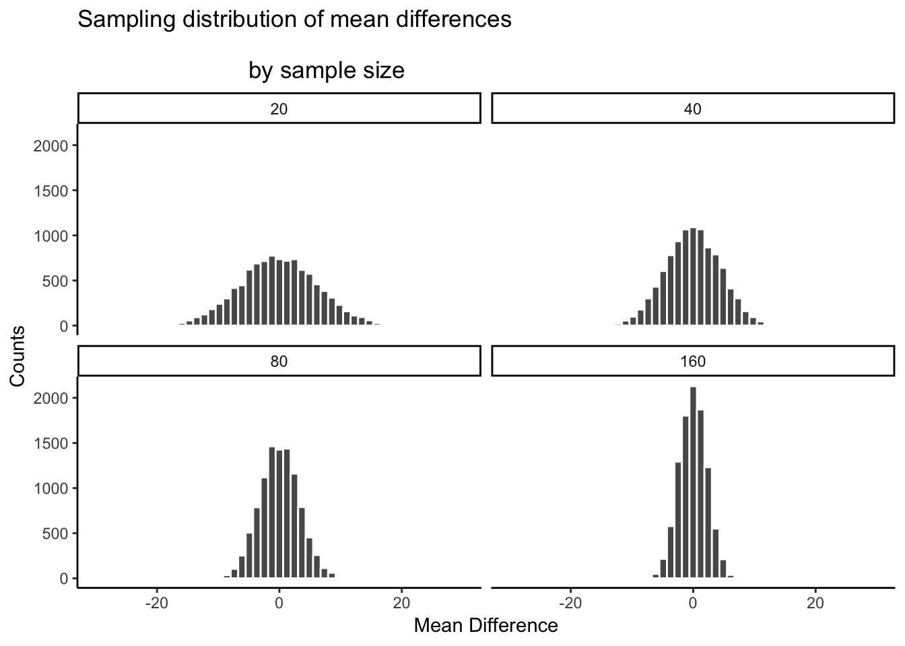
There you have it. The sampling distribution of the mean differences shrinks toward 0 as sample-size increases. This means if you run an experiment with a larger sample-size, you will be able to detect smaller mean differences, and be confident they aren’t due to chance. Let’s look at a table of the minimum and maximum values that chance produced across these four sample-sizes:
library(plyr)
the_range<-ddply(all_df,.(sample_size), summarize, smallest=min(sample),
biggest=max(sample))
knitr::kable(the_range)| sample_size | smallest | biggest |
|---|---|---|
| 20 | -25.793248 | 26.43918 |
| 40 | -15.597064 | 17.86077 |
| 80 | -13.830885 | 12.97963 |
| 160 | -9.284729 | 10.19612 |
| The table is | telling. The | range of chance’s behavior is very wide for sample-size 20, but about half as wide for sample-size 160. If it turns out your manipulation will cause a difference of +11, then what should you do? Run an experiment with 20 people? I hope not. If you did that, you could get +11s fairly often by chance. If you ran the experiment with 160, then you definetly be able to say that +11 was not due to chance, it would be outside the range of what chance can do. You could even consider running the experiment with 80 subjects. A +11 there wouldn’t happen often by chance, and you’d be cost-effective, spending less time on the experiment. |
The point is: the design of the experiment determines the sizes of the effects it can detect. If you want to detect a small effect. Make your sample size bigger. It’s really important to say this is not the only thing you can do. You can also make your cell-sizes bigger. For example, often times we take several measurements from a single subject. The more measurements you take (cell-size), the more stable your estimate of the subject’s mean. We discuss these issues more later. You can also make a stronger manipulation, when possible.
5.6.6 Part 5: I have the power
By the power of greyskull, I HAVE THE POWER - He-man
The last thing we’ll talk about here is something called power. In fact, we are going to talk about the concept of power, not actual power. It’s confusing now, but later we will define power in terms of some particular ideas about statistical inference. Here, we will just talk about the idea. And, we’ll show how to make sure your design has 100% power. Because, why not. Why run a design that doesn’t have the power?
The big idea behind power is the concept of sensitivity. The concept of sensitivity assumes that there is something to be sensitive to. That is, there is some real difference that can be measured. So, the question is, how sensitive is your experiment? We’ve already seen that the number of subjects (sample-size), changes the sensitivity of the design. More subjects, more sensitivity to smaller effects. Let’s take a look at one more plot. What we will do is simulate a measure of sensitivity across a whole bunch of sample sizes, from 10 to 300. We’ll do this in steps of 10. For each simluation, we’ll compute the mean differences as we have done. But, rather than showing the histogram, we’ll just compute the smallest value and the largest value. This is a pretty good measure of the outer reach of chance. Then we’ll just plot those values as a function of sample size and see what we’ve got.
all_df<-data.frame()
for(sims in 1:1000){
for(n in seq(10,300,10)){
sample<-mean(rnorm(n,100,20)-rnorm(n,100,20))
t_df<-data.frame(sims=sims,
sample,
sample_size=n
)
all_df<-rbind(all_df,t_df)
}
}
the_range<-ddply(all_df,.(sample_size), summarize, smallest=min(sample),
biggest=max(sample))
ggplot(the_range, aes(x=sample_size,y=smallest))+
geom_point()+
geom_line()+
geom_point(aes(x=sample_size,y=biggest))+
geom_line(aes(x=sample_size,y=biggest))+
geom_hline(yintercept=0)+
theme_classic()+ggtitle("Maximum and minimum mean differences \n
as a function of sample_size")+
ylab("Most extreme mean difference")+
xlab("Sample Size")
What we have here is a reasonably precise window of sensitivity as a function of sample size. For each sample size, we can see the maximum difference that chance produced, and the minimum difference. In those simulations, chance never produced bigger or smaller differences. So, each design is sensitive to any difference that is underneath the bottom line, or above the top line. It’s really that simple.
Here’s another way of putting it. Which of the sample sizes will be sensitive to a difference of +10 or -10. That is, if a difference of +10 or -10 was observed, then we could very confidently say that the difference was not due to chance, because according to these simulations, chance never produced differences that big. To help us see which ones are sensitive, let’s draw some horizontal lines at -10 and +10.
ggplot(the_range, aes(x=sample_size,y=smallest))+
geom_point()+
geom_line()+
geom_point(aes(x=sample_size,y=biggest))+
geom_line(aes(x=sample_size,y=biggest))+
geom_hline(yintercept=0)+
geom_hline(yintercept=10, color="red")+
geom_hline(yintercept=-10, color="red")+
theme_classic()+ggtitle("Maximum and minimum mean differences \n
as a function of sample_size")+
ylab("Most extreme mean difference")+
xlab("Sample Size")
I would say all of the designs with sample size = 100 or greater are all perfectly sensitive to real differences of 10 (if they exist). We can see that all of the dots after sample size 100 are underneath the red line. So effects that are as big as the red line, or bigger will almost never occur due to chance. But, if they do occur in nature, those experiments will detect them straight away. That is sensitivity. And, designing your experiment so that you know it is sensitive to the thing you are looking for is the big idea behind power. It’s worth this kind of thing before you run your experiment. Why waste your own time and run an experiment that doesn’t have a chance of detecting the thing you are looking for.
5.6.7 Summary of Crump Test
What did we learn from this so-called fake Crump test that nobody uses? Well, we learned the basics of what we’ll be doing moving forward. And, we did it all without any hard math or formulas. We sampled numbers, we computed means, we subtracted means, then we did that alot and counted up the means and put them in a histogram. This showed us what chance do in an experiment. Then, we discussed how to make decisions around these facts. And, we showed how we can manipulate the role of chance just by changing things like sample size.
5.7 The randomization test (permutation test)
Welcome to the first official inferential statistic in this textbook. Up to now we have been building some intuitions for you. Now, we will get slightly more formal and show you how we can use random chance to tell use whether our experimental finding was likely due to chance or not. We do this with something called a randomization test. The ideas behind the randomization test are the very same ideas behind the rest of the inferential statistics that we will talk about in later chapters. And, surprise, we have already talked about all of the major ideas already. Now, we will just put the ideas together, and give them the name randomization test.
Here’s the big idea. When you run an experiment and collect some data you find out what happened. But, because you ran the experiment only once, you don’t get to find out what could have happened. The randomization test is a way of finding out what could have happened. And, once you know that, you can compare what did happen in your experiment, with what could have happened.
5.7.1 Pretend example does chewing gum improve your grades?
Let’s say you run an experiment to find out if chewing gum causes students to get better grades on statistics exams. You randomly assign 20 students to the chewing gum condition, and 20 different students to the no-chewing gum condition. Then, you give everybody statistics tests and measure their grades. If chewing gum causes better grades, then the chewing gum group should have higher grades on average than the group who did not chew gum.
Let’s say the data looked like this:
library(dplyr)##
## Attaching package: 'dplyr'## The following objects are masked from 'package:plyr':
##
## arrange, count, desc, failwith, id, mutate, rename, summarise,
## summarize## The following objects are masked from 'package:stats':
##
## filter, lag## The following objects are masked from 'package:base':
##
## intersect, setdiff, setequal, uniongum<-round(runif(20,70,100))
no_gum<-round(runif(20,40,90))
gum_df<-data.frame(student=seq(1:20),gum,no_gum)
gum_df <- gum_df %>%
rbind(c("Sums",colSums(gum_df[,2:3]))) %>%
rbind(c("Means",colMeans(gum_df[,2:3])))
knitr::kable(gum_df)| student | gum | no_gum |
|---|---|---|
| 1 | 76 | 46 |
| 2 | 85 | 50 |
| 3 | 74 | 54 |
| 4 | 89 | 46 |
| 5 | 85 | 46 |
| 6 | 88 | 57 |
| 7 | 95 | 41 |
| 8 | 70 | 70 |
| 9 | 77 | 46 |
| 10 | 93 | 86 |
| 11 | 75 | 54 |
| 12 | 91 | 54 |
| 13 | 89 | 79 |
| 14 | 77 | 52 |
| 15 | 71 | 87 |
| 16 | 90 | 87 |
| 17 | 94 | 43 |
| 18 | 73 | 62 |
| 19 | 90 | 58 |
| 20 | 93 | 74 |
| Sums | 1675 | 1192 |
| Means | 83.75 | 59.6 |
So, did the students chewing gum do better than the students who didn’t chew gum? Look at the mean test performance at the bottom of the table. The mean for students chewing gum was 83.75, and the mean for students who did not chew gum was 59.6. Just looking at the means, it looks like chewing gum worked!
“STOP THE PRESSES, this is silly”. We already know this is silly because we are making pretend data. But, even if this was real data, you might think, “Chewing gum won’t do anything, this difference could have been caused by chance, I mean, maybe the better students just happened to be put into the chewing group, so because of that their grades were higher, chewing gum didn’t do anything…”. We agree. But, let’s take a closer look. We already know how the data come out. What we want to know is how they could have come out, what are all the possibilities?
For example, the data would have come out a bit different if we happened to have put some of the students from the gum group into the no gum group, and vice versa. Think of all the ways you could have assigned the 40 students into two groups, there are lots of ways. And, the means for each group would turn out differently depending on how the students are assigned to each group.
Practically speaking, it’s not possible to run the experiment every possible way, that would take too long. But, we can nevertheless estimate how all of those experiments might have turned out using simulation.
Here’s the idea. We will take the 40 measurements (exam scores) that we found for all the students. Then we will randomly take 20 of them and pretend they were in the gum group, and we’ll take the remaining 20 and pretend they were in the no gum group. Then we can compute the means again to find out what would have happened. We can keep doing this over and over again. Everytime computing what happened in that version of the experiment.
5.7.1.1 Doing the randomization
Before we do that, let’s show how the randomization part works. We’ll use fewer numbers to make the process easier to look at. Here are the first 5 exam scores for students in both groups.
gum_df_small<-gum_df[1:5,]
gum_df_small$gum<-as.numeric(gum_df_small$gum)
gum_df_small$no_gum<-as.numeric(gum_df_small$no_gum)
gum_df_small <- gum_df_small %>%
rbind(c("Sums",colSums(gum_df_small[,2:3]))) %>%
rbind(c("Means",colMeans(gum_df_small[,2:3])))
knitr::kable(gum_df_small)| student | gum | no_gum |
|---|---|---|
| 1 | 76 | 46 |
| 2 | 85 | 50 |
| 3 | 74 | 54 |
| 4 | 89 | 46 |
| 5 | 85 | 46 |
| Sums | 409 | 242 |
| Means | 81.8 | 48.4 |
Things could have turned out differently if some of the subjects in the gum group were switched with the subjects in the no gum group. Here’s how we can do some random switching. We will do this using R.
all_scores <- c(gum[1:5],no_gum[1:5])
randomize_scores <- sample(all_scores)
new_gum <- randomize_scores[1:5]
new_no_gum <- randomize_scores[6:10]
print(new_gum)## [1] 46 50 85 74 89print(new_no_gum)## [1] 76 46 46 54 85We have taken the first 5 numbers from the original data, and put them all into a variable called all_scores. Then we use the sample function in R to shuffle the scores. Finally, we take the first 5 scores from the shuffled numbers and put them into a new variable called new_gum. Then, we put the last five scores into the variable new_no_gum. Then we printed them, so we can see them.
If we do this a couple of times and put them in a table, we can indeed see that the means for gum and no gum would be different if the subjects were shuffled around. Check it out:
| student | gum | no_gum | gum2 | no_gum2 | gum3 | no_gum3 |
|---|---|---|---|---|---|---|
| 1 | 76 | 46 | 85 | 89 | 50 | 74 |
| 2 | 85 | 50 | 46 | 74 | 85 | 46 |
| 3 | 74 | 54 | 54 | 76 | 54 | 89 |
| 4 | 89 | 46 | 85 | 46 | 46 | 76 |
| 5 | 85 | 46 | 46 | 50 | 46 | 85 |
| Sums | 409 | 242 | 316 | 335 | 281 | 370 |
| Means | 81.8 | 48.4 | 63.2 | 67 | 56.2 | 74 |
5.7.1.2 Simulating the mean differences across the different randomizations
In our pretend experiment we found that the mean for students chewing gum was 83.75, and the mean for students who did not chew gum was 59.6. The mean difference (gum - no gum) was 24.15. This is a pretty big difference. This is what did happend. But, what could have happened? If we tried out all of the experiments where different subjects were switched around, what does the distribution of the possible mean differences look like? Let’s find out. This is what the randomization test is all about.
When we do our randomization test we will measure the mean difference in exam scores between the gum group and the no gum group. Every time we randomize we will save the mean difference.
Let’s look at a short animation of what is happenining in the randomization test. Note, what you are about to see is data from a different fake experiment, but the principles are the same. We’ll return to the gum no gum experiment after the animiation. The animation is showing you three important things. First, the purple dots show you the mean scores in two groups (didn’t study vs study). It looks like there is a difference, as 1 dot is lower than the other. We want to know if chance could produce a difference this big. At the beginning of the animiation, the light green and red dots show the individual scores from each of 10 subjects in the design (the purple dots are the means of these original scores). Now, during the randomizations, we randomly shuffle the original scores between the groups. You can see this happening throughout the animation, as the green and red dots appear in different random combinations. The moving yellow dots show you the new means for each group after the randomization. The differences between the yellow dots show you the range of differences that chance could produce.

study<-round(runif(10,80,100))
no_study<-round(runif(10,40,90))
study_df<-data.frame(student=seq(1:10),study,no_study)
mean_original<-data.frame(IV=c("studied","didnt_study"),
means=c(mean(study),mean(no_study)))
t_df<-data.frame(sims=rep(1,20),
IV=rep(c("studied","didnt_study"),each=10),
values=c(study,no_study),
rand_order=rep(c(0,1),each=10))
raw_df<-t_df
for(i in 2:10){
#all<-sample(c(study,no_study))
#mean_study[i]<-mean(all[1:20])
#mean_no_study[i]<-mean(all[21:40])
#t_df<-data.frame(sims=rep(i,20),
# IV=rep(c("studied","didnt_study"),each=10),
# values=c(all[1:20],all[21:40]))
new_index<-sample(1:20)
t_df$values<-t_df$values[new_index]
t_df$rand_order<-t_df$rand_order[new_index]
t_df$sims<-rep(i,20)
raw_df<-rbind(raw_df,t_df)
}
raw_df$rand_order<-as.factor(raw_df$rand_order)
rand_df<-aggregate(values~sims*IV,raw_df,mean)
names(rand_df)<-c("sims","IV","means")
#rand_df <- data.frame(sims=rep(1:10,2),means=c(mean_study,mean_no_study),
# IV=rep(c("studied","didnt_study"),each=10))
a<-ggplot(raw_df,aes(x=IV,y=values,color=rand_order,size=3))+
geom_point(stat="identity",alpha=.5)+
geom_point(data=mean_original,aes(x=IV,y=means),stat="identity",shape=21,size=6,color="black",fill="mediumorchid2")+
geom_point(data=rand_df,aes(x=IV,y=means),stat="identity",shape=21,size=6,color="black",fill="gold")+
theme_classic(base_size = 15)+
coord_cartesian(ylim=c(40, 100))+
theme(legend.position="none") +
ggtitle("Randomization test: Original Means (purple),
\n Randomized means (yellow)
\n Original scores (red,greenish)")+
transition_states(
sims,
transition_length = 1,
state_length = 2
)+enter_fade() +
exit_shrink() +
ease_aes('sine-in-out')
animate(a,nframes=100,fps=5)What can we learn from this animation? Well, we are engaging in some visual statistical inference. By looking the range of motion of the yellow dots, we are watching what kind of differences chance can produce. In this animiation, the purple dots, representing the original difference, are outside of the range of chance. The yellow dots move past the purple dots. This is a way of showing that the random chance is very unlikely to produce the original difference. If the purple dots were inside the range of the yellow dots, then when would know that chance is capable of producing the difference we observed, and that it does so fairly often. As a result, we should not conclude the manipulation caused the difference, because it could have easily occured by chance.
Let’s return to the gum example. After we randomized our scores many times, and computed the new means, and the mean differences, we will have loads of mean differences to look at, which we can plot in a histogram. The histogram gives a picture of what could have happened. Then, we can compare what did happen with what could have happened.
Here’s the histogram of the mean differences from the randomization test. For this simulation, we randomized the results from the original experiment 1000 times. This is what could have happened. The blue line in the figure shows us where our observed difference lies on the x-axis.
## `stat_bin()` using `bins = 30`. Pick better value with `binwidth`.
We are looking at another window of chance. We are seeing a histogram of the kinds of mean differences that could have occured in our experiemnt, if we had assigned our subjects to the gum and no gum groups differently. As you can see, the mean differences range from negative to positive. The most frequent difference is 0. Also, the distribution appears to be symmetrical about zero, which shows we had roughly same the chances of getting a positive or negative difference. Also, notice that as the differences get larger (in the positive or negative direction, they become less frequent). The blue line shows us the observed difference, this is the one we found in our fake experiment. Where is it? It’s way out to the right. It is is well outside the histogram. In other words, when we look at what could have happened, we see that what did happen doesn’t occur very often.
IMPORTANT: In this case, when we speak of what could have happened. We are talking about what could have happended by chance. When we compare what did happen to what chance could have done, we can get a better idea of whether our result was caused by chance.
What do you think? Could the difference represented by the blue line have been caused by chance? My answer is probably not. The histogram shows us the window of chance. The blue line is not inside the window. This means we can be pretty confident that the difference we observed was not due to chance.
Ok, let’s pretend we got a much smaller mean difference when we first ran the experiment. For example, the histrogram might look something like this:
## `stat_bin()` using `bins = 30`. Pick better value with `binwidth`.
Look at the blue line. If you found a mean difference of 10, would you be convinced that your difference was not caused by chance? As you can see, the blue line is inside the chance window. Notably, differences of +10 don’t very often. You might infer that you difference was not likely to be due to chance (but you might be a little bit skeptical, because it could have been). How about the red line? The red line represents a difference of +5. If you found a difference of +5 here, would you be confident that your difference was not caused by chance? I wouldn’t be. The red line is totally inside the chance window, this kind of difference happens fairly often. I’d need some more evidence to consider the claim the some independent variable actually caused the difference. I’d be much more comfortable assuming that sampling error probably caused the difference.
5.7.2 Take homes so far
Have you noticed that we haven’t used any formulas yet, but we have been able to accomplish inferential statistics. We will see some formulas as we progress, but these aren’t really that important. What’s important is the idea behind the formulas.
Inferential statistics is an attempt to solve the problem: where did my data from?. In the randomization test example, our question was: where did the differences between the means in my data come from?. We know that the differences could be produced by chance alone. We simulated what chance can due using randomization. Then we plotted what chance can do using a histogram. Then, we used to picture to help us make an inference. Did our observed difference come from the distribution, or not? When the observed difference is clearly inside the chance distribution, then we can infer that our difference could have been produced by chance. When the observed difference is not clearly inside the chance distribution, then we can infer that our difference was probably not produced by chance.
In my opinion, these pictures are very, very helpful. If one of our goals is to help ourselves summarize a bunch of complicated numbers to arrive at an inference, then the pictures do a great job. We don’t even need a summary number, we just need to look at the picture and see if the observed differerence is inside or outside of the window. This is what it is all about. Creating intuitive and meaningful ways to make inferences from our data. As we move forward, the main thing that we will do is formalize our process, and talk more about “standard” inferential statistics. For example, rather than looking at a picture (which is a good thing to do), we will create some helpful numbers. For example, what if you wanted to the probability that your difference could have been produced by chance? That could be a single number, like 95%. If there was a 95% probability that chance can produce the difference you observed, you might not be very confident that something like your experimental manipulation was causing the difference. If there was only 1% probability that chance could produce your difference, then you might be more confident that chance did not produce the difference; and, you might instead be comfortable with the possibility that your experimental manipulation actually caused the differnce. So, how can we arrive at those numbers? In order to get there we will introduce you to some more foundational tools for statistical inference.